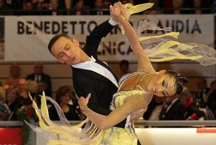

Syllabus Waltz Dodgers
26 April 2017
Floorcraft is one of the most important skills to possess. If you find yourself on the competition floor and somebody is blocking you from continuing your routine, having a plan of how to adjust will keep you looking smooth and graceful. On the other hand, if you get flustered, freeze up, or get into a collision, the judges will all look somewhere else, and you may lose your spot in the next round. In a previous BGBB article, we talked about some basic figures in each dance that could be used to avoid collisions (called dodgers), but today we are going to go in depth into Waltz and give you Syllabus-legal dodgers for every situation you could find yourself in.
Also, check out Syllabus Tango Dodgers and Syllabus Foxtrot Dodgers.
What are Dodgers
When an obstacle on the floor interrupts your routine, the best course of action is to curve your routine to avoid it, without changing the routine itself, however, sometimes that is impossible. In this situation, the routine must change to avoid colliding with the obstacle. A dodger is a single figure or short combination of figures that you can use at a point in your routine to avoid collision, which then returns you to that same point in your routine. Dodgers should be practiced so that when the Man uses one all of a sudden, the Lady is familiar enough with the pattern that she can follow it without hesitation.
You should have a dodger for each of the following situations, which are the most common:
Natural Figures Moving Forward
1) Forward on the RF, facing DW
2) Forward on the RF, facing DC
Reverse Figures Moving Forward
3) Forward on the LF, facing DW
4) Forward on the LF, facing DC
Natural Figures Moving Back
5) Back on the LF, backing LOD
6) Back on the LF, backing LOD, Lady OP
Reverse Figures Moving Back
7) Back on the RF, backing LOD
Figures Commenced in PP
8) In PP moving DW
9) In PP moving DC
Below you will find multiple options of what to do next for each of the 9 situations listed. Choose only one and practice it, so you can fall back on it without thinking when the time comes.
Ballroom Guide's Choice: Top 3 Waltz Dodgers
You may will notice many of the same figures being used over and over. These figures are invaluable for floorcraft, due to their versatility, and being comfortable with them will allow you to get out of any situation. In particular, become familiar with the Hover Corte (or the Reverse Corte, if you do not yet dance the Gold Syllabus), the Back Whisk, and the Outside Spin.
1. Forward on the RF, facing DW
You have just danced a Chasse from PP, and you would like to dance a Natural Turn, but there is an obstacle in your way.
Option 1 (Bronze): Reverse Corte, first step taken RF forward (Lady first step LF back, second and third steps feet closed), followed by a Back Whisk, followed by a Chasse from PP to continue with your routine
Option 2 (Silver): Reverse Corte, first step taken RF forward (Lady first step LF back second and third steps feet closed), followed by an Outside Spin to continue with your routine
Option 3 (Gold): Hover Corte, first step taken RF forward (Lady first step LF back), followed by a Back Whisk, followed by a Chasse from PP to continue with your routine
Option 4 (Gold): Hover Corte, first step taken RF forward (Lady first step LF back), followed by an Outside Spin to continue with your routine
N.B. Options 1 and 2 modify the Reverse Corte quite extensively, as the Corte is meant to be commenced with the Man moving back, however, if the choice must be made between colliding with another couple, making your own dancing look bad to avoid a collision, or modifying the steps of the Reverse Corte, the last option is clearly the best one.
2. Forward on the RF, facing DC
You have just danced a Chasse from PP moving toward DC, and you would like to dance a Basic Weave (step 1 taken RF OP), but there is an obstacle in your way.
Options 1-4 from Situation 1 also apply to this situation in Waltz
Option 5 (Gold): Closed Wing, followed by a Closed Telemark to continue with your routine
3. Forward on the LF, facing DW
You have just danced 4-6 of a Reverse Turn, and you would like to dance a Whisk, but there is an obstacle in your way.
Option 1 (Bronze): Dance a Back Whisk instead of a Whisk
Option 2 (Silver): Drag Hesitation ended backing DW, followed by a Back Whisk turned to the R
Option 3 (Gold): Dance a Contra Check ended in PP instead of a Whisk
4. Forward on the LF, facing DC
You have just danced 4-6 of a Reverse Turn, and you would like to dance a Double Reverse Spin, but there is an obstacle in your way.
Option 1 (Bronze): Back Whisk, followed by a Chasse from PP, followed by a RF Closed Change with step 1 OP to continue with your routine
Option 2 (Bronze): Closed Impetus making minimal rotation to recommence with 4-6 of the Reverse Turn
Option 3 (Silver): Back Whisk, followed by a Wing to continue with your routine
Option 4 (Silver): Underturned Outside Spin to recommence with 4-6 of the Reverse Turn
N.B. All the dodgers above except Option 2 require a bit of modification, as 4-6 of a Reverse Turn is not typically followed by a step back with the Lady OP. Care must be taken to indicate clearly to the Lady that she will not step back, and to allow her to step OP with ease. Step 1 of the dodger should be taken DW against LOD.
5. Back on the LF, backing LOD
You have just danced 1-3 of a Natural Turn, and you would like to dance 4-6 of a Natural Spin Turn, but there is an obstacle in your way.
Option 1 (Bronze): Dance a Closed Impetus instead of 4-6 of a Natural Spin Turn
Option 2 (Gold): Contra Check to PP, followed by a Chasse from PP to recommence with 1-3 of the Natural Turn
N.B. Option 1 is a much easier and safer choice than Option 2, as Option 2 requires a complete change in direction, as well as overturning the Contra Check to achieve the correct alignment in Promenade Position. However, if another couple is so close to you that you cannot take a single step back, Option 2 works.
6. Back on the LF, backing LOD, Lady OP
You have just danced 1-3 of the Basic Weave, and you would like to continue with 4-6 of the Basic Weave, but there is an obstacle in your way.
Option 1 (Bronze): Dance a Closed Impetus (Lady step 1 OP) to end backing DW against LOD to recommence from step 1 of the Basic Weave
Option 2 (Silver): Dance an Underturned Outside Spin to end backing DW against LOD to recommence from step 1 of the Basic Weave
Option 3 (Silver): Dance an Outside Spin ended facing DW instead of 4-6 of the Basic Weave to continue with the figure that would have followed the Basic Weave
7. Back on the RF, backing LOD
You have just danced an Overturned Natural Spin Turn, and you would like to dance the Turning Locks to the R, but there is an obstacle in your way.
Option 1 (Bronze): Basic Weave to recommence the Natural Spin Turn
Option 2: (Bronze): Reverse Corte, followed by a Back Whisk, followed by a Chasse from PP, to recommence the Natural Spin Turn
Option 3 (Bronze): Reverse Corte, followed by a Closed Impetus to continue with your routine
Option 4 (Silver): Reverse Corte, followed by an Underturned Outside Spin to continue with your routine
Option 5 (Gold): Hover Corte, followed by a Closed Impetus to continue with your routine
Option 6 (Gold): Hover Corte, followed by an Underturned Outside Spin to continue with your routine
8. In PP moving DW
You have just danced an Open Telemark, and you would like to dance a Chasse from PP, but there is an obstacle in your way.
Option 1 (Silver): Cross Hesitation, followed by a Back Whisk to continue with your routine
Option 2 (Silver): Wing to recommence the Open Telemark to continue with your routine
Option 3 (Gold): Hover Corte commenced in PP, followed by a Back Whisk to continue with your routine
Option 4 (Gold): Dance a Left Whisk on beat 1, followed by a Contra Check to continue with your routine
9. In PP moving DC
You have just danced an Open Impetus, and you would like to dance a Weave from PP, but there is an obstacle in your way.
Option 1 (Silver): Cross Hesitation, followed by a Back Whisk to continue with your routine
Option 2 (Silver): Wing to recommence the Open Impetus to continue with your routine
Option 3 (Gold): Hover Corte commenced in PP, followed by a Back Whisk to continue with your routine
Option 4 (Gold): Dance a Left Whisk on beat 1, followed by a Contra Check to continue with your routine